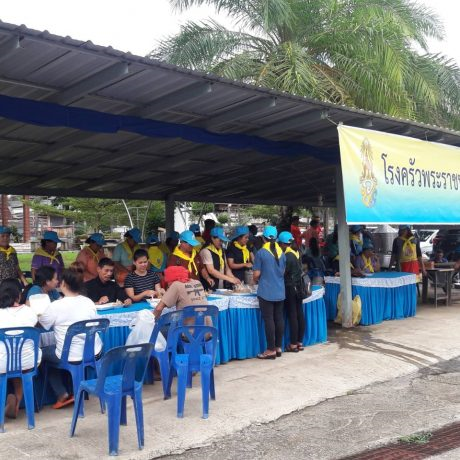
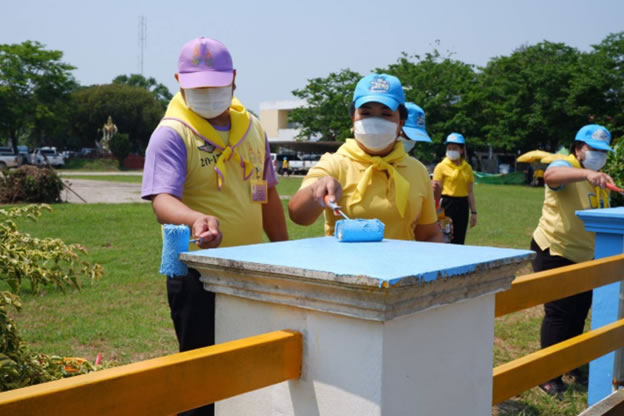
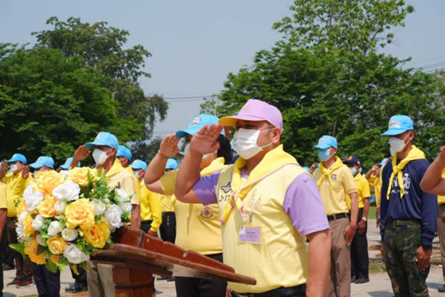

คุณลักษณะที่พึงประสงค์ของจิตอาสาพระราชทาน
มีความซื่อสัตย์ เสียสละ อดทนคำนึงถึงผลประโยชน์ของส่วนรวมมากกว่าผลประโยชน์ของตนเอง-
มีศีลธรรม รักษาความสัตย์ หวังดีต่อผู้อื่น เผื่อแผ่และแบ่งปัน
มีวินัยและความรับผิดชอบ เคารพกฎหมายบ้านเมือง-
มีกริยา วาจา สุภาพเรียบร้อย-
ไม่ดื่มสุราหรือใช้สารเสพติดอื่นใดในขณะปฏิบัติงาน-
มีจิตใจเข้มแข็งและมีทัศนคติที่ดีในการปฏิบัติงานเพื่อส่วนรวม-
รักษาวัฒนธรรมประเพณีไทยอันดีงาม ผู้น้อยรู้จักการเคารพผู้ใหญ-่

สมเด็จพระเจ้าอยู่หัว ทรงพระกรุณาโปรดเกล้า ฯ ให้จัดตั้งโรงครัวพระราชทาน (คลิ้กที่นี่เพื่ออ่านต่อ)

สมเด็จพระเจ้าอยู่หัว ทรงพระกรุณาโปรดเกล้า ฯ ให้จัดตั้งโรงครัวพระราชทาน (คลิ้กที่นี่เพื่ออ่านต่อ)

ศูนย์อำนวยการจิตอาสาพระราชทาน อำเภอเชียงคาน จังหวัดเลย จัดกิจกรรมจิตอาสาพัฒนาปรับปรุงภูมิทัศน์สถานที่ราชการ

ศูนย์อำนวยการจิตอาสาพระราชทาน อำเภอเชียงคาน จังหวัดเลย จัดกิจกรรมจิตอาสาพัฒนาปรับปรุงภูมิทัศน์สถานที่ราชการ
SUPAWIT SRIWISET
42/105 NAWAMIN ROAD 143 BUENGKUM BANGKOK 10240